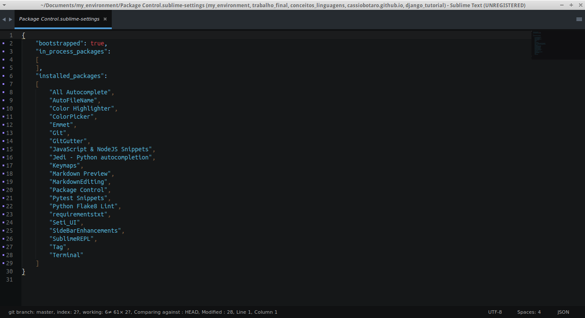

My Enviroment
Personal configuration for Sublime Text 3 and python environment at Ubuntu. It's focused on webdeveloper.

My goal in this project is to be a model, if you don't like something, fork and customize!
Features:
- git
- web2py support
- django support
- pep8
- pyflake
- html helpers(emmet)
- virtual environment(virtualenvwrapper)
- better console(ipython)
- markdown preview
- ...and more!
I have a custom bash here
Requirements:
Ubuntu
Python
Instalation
./utils.sh
./install-enviroment.sh
./install-sublime.sh
./install-plugins.sh
./install-preferences.sh
Change the theme to SetiUI
Preferences > Color Scheme > Seti_UI > Scheme > Seti
Description
See what each script do:
* utils.sh - Install nodejs(required for some plugins), git(version control) and pip(python package manager)
* install-enviroment.sh - Install a python enviroment with pip, ipython, virtualenvwrapper and pytest
* install-sublime.sh - Install sublime text with package control
* install-plugins.sh - Install plugins in sublime
* install-preferences.sh - Some personal configurations
Commands
- Ctrl + P -> Goto anything
- Ctrl + f -> search in file
- Ctrl + r -> goto symbol in file
- Ctrl + g -> goto line in file
- alt + / -> autcomplete
- ctrl + / -> toggle comment
- ctrl + l -> select line
- ctrl + ] -> indent
- ctrl + ] -> unindent
- ctrl + shift + v -> paste and indent
- ctrl + shift + k -> delete line
- ctrl + shift + d -> duplicate line
- ctrl + shift + up -> up line
- ctrl + shift + down -> down line
- ctrl + shift + f -> search in project
where: <project>
Anaconda:
- shift + alt + g -> go to definition
- shift + alt + f -> find usages
- shift + alt + d -> show docstring
- shift + alt + r -> auto format with pep8
Others
- ctrl + alt + f -> format js